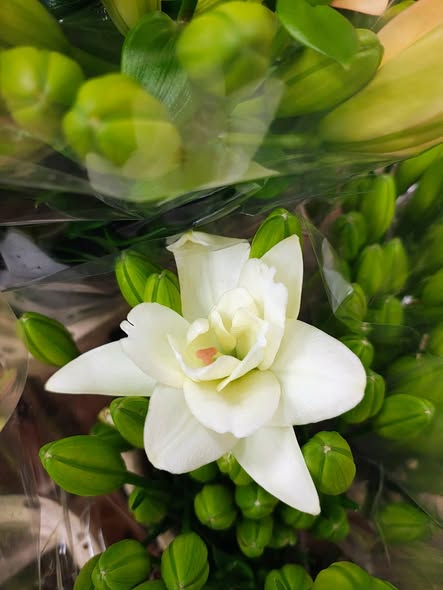
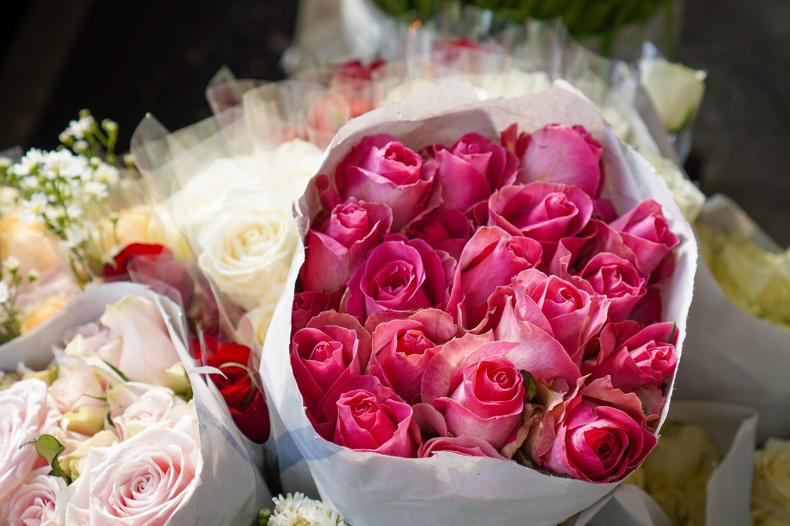
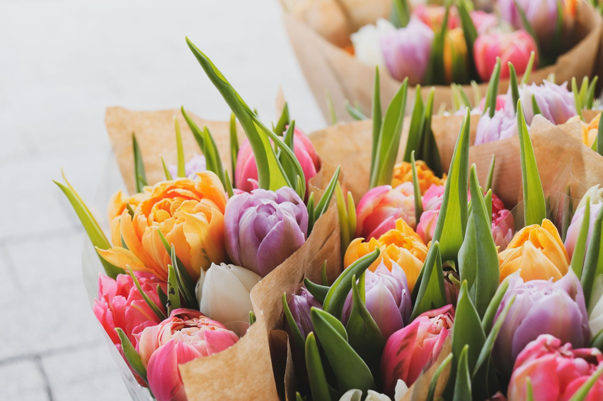

Tulipany z naszej szklarni

Róże ogrodowe

Hortensje i kwiaty cięte

Słoneczniki

Goździki w pęczkach

Lilie

Świeże tulipany



Zdjęcia poglądowe. Nasze realizacje z okolicy chętnie pokażemy na miejscu przy wycenie.

Część tego, co u nas rośnie i co znajdziesz w sprzedaży. Asortyment zmienia się z sezonem.


Zdjęcia poglądowe. Nasze realizacje z okolicy chętnie pokażemy na miejscu przy wycenie.
Opowiedz, co trzeba zrobić - przygotujemy wycenę dopasowaną do potrzeb.